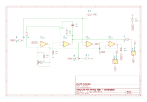

Sheet 4
Makeup gain and the output stage
Compression makes things quieter. This section gives you the level back and drives it out of the module.

Makeup gain
Once the compressor is pulling 10 dB off the peaks, the whole signal is quieter than it was. Makeup gain puts it back so you can compare compressed and uncompressed at the same loudness — without which every compressor sounds worse simply because it is quieter.
U2A is a non-inverting amplifier. R26 (1 kΩ) sits from its
inverting input to ground and RV2 (10 kΩ) forms the feedback, so the gain is
1 + RV2/R26 — adjustable from 1× to 11×, or
0 to about +21 dB.
Why the detector taps before this stage
The sidechain listens at SIG-VCA, which is the recovery amplifier's output
— before makeup gain. If it listened after, then turning up makeup would raise
the level the detector sees, which would increase gain reduction, which would lower the
output... and your threshold setting would change every time you touched the makeup knob.
Tapping before makeup keeps the two controls independent.
Driving the output
The module has to present a balanced output. It does that with two op amps in antiphase:
U2A drives the hot pin directly, and U2B is a unity-gain inverter
(R29/R30, both 10 kΩ) that produces the cold pin. The two
outputs move in opposite directions, which is exactly what a balanced receiver at the other end
wants to see.
R28 and R32, both 100 Ω, sit in series with each output.
They are build-out resistors: they isolate the op amp from the capacitance of
whatever cable you plug in. Without them a long cable can make the op amp oscillate.
Do not ground the cold output
Because both pins are actively driven, shorting pin 4 to ground — which is what
happens if you feed an unbalanced input with the wrong cable — puts an NE5532 output
into 100 Ω. It will survive, but it will run hot and distort. If unbalanced destinations
are likely, raise R28 and R32 to 220 Ω, or fit an output
transformer.
Hard bypass
SW1 is a DPDT switch that transfers output pins 2 and 4 between the module's
own drivers and the input pins 10 and 8. In bypass, the audio goes straight from the rack's
input to the rack's output through nothing but a switch contact — genuinely out of
circuit, not just "gain set to unity". That is what makes an A/B comparison trustworthy.
The aux section
Drawn as a separable block because it uses chassis-specific pins:
- Aux in (pins 11, 9) →
U5A, another difference amplifier, producing theKEYnet. This is an external key input: it lets the compressor respond to a different signal than the one it is processing. Ducking a music bed under a voiceover is the classic use. - Aux out (pins 3, 7) →
U5Bbuffers the main output to give a duplicate feed. It is impedance balanced rather than actively driven: the hot pin carries the signal through 100 Ω and the cold pin is 100 Ω to ground. A balanced receiver still rejects interference properly, at half the level and half the parts.
Omit U5 and its four resistors and the module becomes fully standards-compliant,
and gives back about 16 mA per rail.